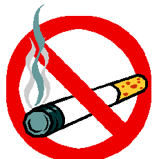
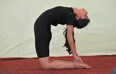
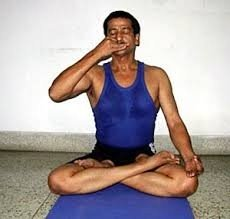
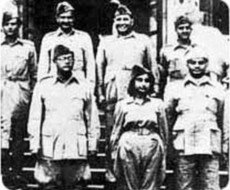
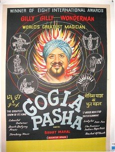
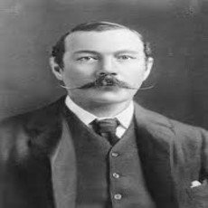
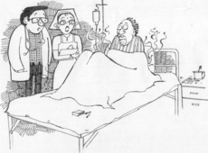

It is May and I am happy to inform you that this is our anniversary issue. Yes— we have been together for 12 months now. It has been an enjoyable journey so far creating a health bulletin for you that carries some useful information, a bit of learning and a bit of fun too. Since this is our anniversary issue, we have only one serious topic of general interest, followed by a light article. Stress and tension have become common nowadays due to fast paced lifestyles, and I thought we would address this important subject this month. So we have for you
STRESS AND DISEASE
FAMOUS DOCTORS
MEDICAL JOKE
1. STRESS AND DISEASE
All of us I am sure feel stressed at least once a day. Normally these are small stresses that we can handle, but sometimes we experience continuous spurts of minor stress or a very severe attack, that can exceed our tolerance levels. This can be dangerous and cause disease. So it is very important to understand how and why stress can harm us and how it can be controlled. Can we define stress? Put simply, we can call it a “force, pressure
or strain exerted upon a person who resists these forces without attempting to adapt”.
Human Response to Stress
When a person undergoes stress, he will adapt to it if he is resilient. Whenever I see a tall and healthy tree standing firm on its strong foundation, swaying with the wind (and not against it), withstanding all manner of harsh conditions with resilience, while bearing bountiful fruits and flowers—- I think there can be no better example of how to handle stress and succeed against all odds.
But instead of adapting to adverse conditions, if you resist, you will go into the stage where anxiety develops and if the stressors persist, illness can set in. Let me give you the example of a rubber band—you pull on it and it comes back to normal. But if you keep pulling on it, over a period of time it will lose its elasticity, not come back to its original shape and later break. That is what happens when stress is repeated and persistent—it takes a toll on the body.
Warning signs of excessive stress
We have understood that stress can cause disease, but are there any warning signs? Yes, these warning signs can be.
Feeling anxious, irritable, or depressed
Loss of appetite
Decreased interest in surroundings and appearance,
Muscle tension or headaches
Apathy, loss of interest in work.
Forgetfulness
Lack of confidence
New mannerisms
Problem sleeping
Dependence on alcohol or drugs
Stomach problems
Social withdrawal
Loss of sex drive
Anger, Frustration, Fatigue
If these warning signs are ignored—it can lead to illness.
Stress induced Disease
Like I said, if we ignore the warning signs, disease sets in., Stress induced diseases are called psycho (mind) soma (body) or psychosomatic diseases where the body is affected by stress on the mind. Psycho- somatic illnesses can be colds, migraine, hyperacidity, backache, anorexia nervosa, chronic fatigue syndrome, anxiety states, hysteria, sexual and menstrual problems, eczema (an irritant skin problem) and urticaria (hives), diarrhoea, constipation etc. Stress can also exacerbate hypertension, diabetes and heart disease. With so many preventable problems due to stress, it becomes imperative to learn how to manage it.
How to handle stress
Over the years, many techniques have been developed to combat stress. Let us try to understand some of them.
Attitudinal changes
Improving physical fitness
Physical relaxation techniques
Mental relaxation techniques
Breathing techniques
Seeking outside help
Medication
Attitudinal change
There are many changes that you can bring about in your attitude that can go a long way in making you a more balanced and de-stressed person. Some of these are
ManageTime
Create a balanced schedule – Analyze your schedule, responsibilities, and deadlines. Try to find a balance between work and family life, social activities, solitary pursuits, and daily responsibilities.
Don’t over-commit time
Prioritize and avoid scheduling things back-to back or trying to fit too much into one day.
Leave early for work
Even 15 minutes can make a difference to ease into your day instead of getting stressed to reach on time.
Plan regular breaks
give yourself ‘me’ time—Make sure to take short breaks throughout the day to sit back and clear your mind. Stepping away from work to briefly relax and recharge will help you to become productive. Try stretching, walking, practice a relaxation technique, reading fun mails from your favorites group etc.
Reduce addictions
Too much intake of alcohol, tea, coffee, and avoiding smoking totally are other factors to reduce stress related illness, since they cause release of stress hormones that impact the body negatively.

Don’t think of people as black or white
Each person should be treated as a different individual, like in a basket of fruits, there are some good ones and some bad, everyone has good and bad traits and we should learn to praise the good ones while tolerating the bad —-while learning to live with all.
Also project an effective outward image of yourself
since a tidy and unruffled person is more likely to instill confidence in others, and reduce individual stress—-like a duck, presents a calm exterior, while paddling furiously underneath.
Manage Tasks
Make a list of tasks you have to do, and tackle them in order of importance. Break projects into small steps and finish tasks as they come. Delegate responsibility and feel lighter to concentrate on other jobs that need your attention.
Don’t get bogged down by criticism
Mark Twain the famous American author has said—‘no one kicks a dead dog’, and “a successful man is one who builds a strong foundation out of bricks thrown at him by others.”
Abraham Lincoln has also said
“If the end brings me out right, then what is said against me does not matter, And if it brings me out wrong, then ten angels swearing I am right, Will make no difference”
Learn to say ‘no’ - Not being able to say ‘no’ can become a major source of unnecessary stress. Often ‘no’ is associated with aggressiveness or selfishness. However it may be required to keep you de-stressed.
Control is the key word - learn self-control—try not to lose your temper—it never helps, but only adds to stress.
Taking vacations - it is important to schedule time away from work for purposes of vacation—- consider taking a number of mini-vacations spread more frequently throughout the year.
Balanced Diet - Eating small but frequent meals throughout the day maintains an even level of blood sugar in your body. Low blood sugar makes us feel anxious and irritable.
Get enough sleep - Lack of sleep also leaves us vulnerable to stress as our ability to handle situations is compromised.
Moderate exercise - Moderate exercise, ‘tones, hones, and prevents moans’—so make sure you indulge in an activity of your choice regularly.
Improve physical fitness - Improving physical fitness (which can be achieved by walking fifteen kilometers a week, aerobics or yogic asanas,) is a great de-stressor—‘sound body, is equal to sound mind’—and vice versa

Physical relaxation - can be achieved by physical training of muscles body massage, (by experts), and shavasana.
Mental relaxation - Mental relaxation can be achieved by shavasana, meditation, listening to soothing music, reading humorous literature, chanting mantras, or saying prayers with beads or rosaries.
Breathing Exercises or Pranayam - Breath is equivalent to ‘Prana’ or life. When someone gets a brilliant idea, he is ‘inspired’ and conversely when someone dies, we say he has ‘expired’. From this we can gauge the importance of breath. Breath provides us with life giving oxygen to every cell in the body when we breathe in; and removes harmful toxins when we breathe out. It makes us healthier, reduces stress and rejuvenates all organs

Seeking outside help - those of you who are stressed should join a social group, laughter club, watching comedy shows and movies, towel club (each person talks about his sorrows, and everyone sympathises), listening to discourses on Bhagvad Gita, Ramayana, Bible or Koran, joining a trekking group etc. to reduce stress.
Psychotherapy - by a trained psychologist, can benefit those of you who do not respond to routine measures. Do not hesitate to approach one if you really need help.
Medications - Medications to reduce stress should be as a last resort, and from a psychiatrist.
Simple test to diagnose stress - High alpha amylase levels in saliva indicate that a person is prone to stress related illnesses. I hope the measures outlined above will help to reduce stress in your life and prevent many psycho somatic illnesses.
2. FAMOUS DOCTORS
Dr. Lakshmi Sehgal - belonged to the ‘Azad Hind Fauj’and worked with Subhash Chandra Bose for many years.

Dr. Sushila Nayar - was associated with Mahatma Gandhi and the freedom movement, and later also entered politics. She did her medicine from Lady Harding Medical College.
Dr. Chenna Reddy - was the former Chief Minister of Andhra Pradesh, Governor of Uttar Pradesh and also a central minister at one time, and we are all familiar with Dr. Farooq Abdullah who was Chief Minister of Jammu & Kashmir.
There is also the example of Dr. Seewasagar Ramgoolam, who had the distinction of heading Mauritius as its Prime Minister
A magical name that springs to mind when we talk about doctors who have excelled in their alternate professions is of Gogia Pasha the famous magician.

When he was a child, his father consulted an astrologer who predicted that he would earn fame through the use of his nimble fingers, and it was decided to make him a surgeon. However fate had ordained otherwise, for after becoming a surgeon, he went to London for further studies, where he came into contact with a magician, became his disciple and attained fame as predicted through the use of his skilled fingers!
Dr Shriram Lagoo did his MBBS from BJ Medical College Pune, practiced for several years before becoming a theatre and film actor
Dr. Mohan Agashe also did his MBBS and Psychiatry specialization from BJ Medical College before similarly becoming a well-known theatre and film personality.
Dr. Narottam Puri an ENT doctor from Delhi, is better known as an ace cricket commentator.
Australian medicoRichard Charlesworth excelled both in cricket and hockey.
He captained the hockey team, which won a bronze at Buenos Aires in the 1978 World Cup, where between matches he was said to have repaired three split eyebrows and a forehead! He played first class cricket for the Western Australian team that defeated a visiting Indian side, and also had the dubious distinction of once playing three overs without scoring a run, prompting a wag from the crowd to shout “Take his pulse somebody, I think he’s dead!” (The spectator was obviously aware of Dr. Charlesworth’s medical qualification). He visited India as captain of the Cricketers’ Hockey Club, and when asked how he managed to play both games he said that in Australia they played cricket in summer and hockey in winter so there was no problem.
Another interesting case is of Dr. Ms. Renee Richards the well-known tennis player, who was an eye specialist, and before undergoing a sex change operation, was known as Dr. Richard Rasking.
A twenty-two year old medical student Ms. Celine Inigo, who weighed 125 kg, used her assets to good advantage by becoming “Miss World Heavyweight” in 1977
Robin Cook an ophthalmologist by profession, from Harvard Medical School, has attained fame the world over as the author of many racy medical thrillers like ‘The Terminal man’ and “Coma” which most of us have read and enjoyed.
Richard Gordon who has also written the highly popular ‘Doctor’ series like ‘Doctor in the house’, is from UK
Somerset Maugham one of the best-known names in English literature wrote many short stories and novels, two of which, “The razor’s edge” and “Of human bondage” were made into movies.
The most famous author of them is of course Sir Arthur Conan Doyle, the creator of the incomparable Sherlock Holmes.

3. MEDICAL JOKE
Smoky encounters
One of our professors, examining a villager’s behind for piles, kept up a cheerful flow of chatter to make him relax his rectal muscles. “So, do you smoke Baba?” he asked. Pat came the rejoinder, “Why, do you see smoke coming out from there?”
Another patient, caught smoking in bed by one of our professors, quickly hid his ‘bidi’ under the blanket and, notwithstanding the strong odour hovering about him like a cloud, blandly announced, “Sahib that was an ‘agarbatti’ I lit.”

Hope you found this issue useful and interesting. We welcome your feedback and suggestions for future interactions. We would also like to encourage those of you diagnosed with specific problems to revert back to us with the current status of your problem by E-mail or meet me personally if necessary. I will try my best to address your problems. Before signing off, we at Ayushman wish you a healthy month and year—Ayushman bhava!
Dr.Geeta Sundar MD Chief Health Counsel, India online Health